CLIENT BACKGROUND AND CURRENT STATE
Located in the Cordova Recreation Centre, Freshens Fresh Food Studio is Purdue’s ‘healthy fresh casual’ concept offering which serves prepared-to-order food inspired by fresh ingredients. They are centred around creating a culture of health and wellness. Their signature fresh blended smoothies are extremely popular amongst Purdue students.
Freshens does not have a centralised database system to keep track of their data. Information regarding vendors, customer orders, employees and supplier orders are difficult to access. Some of their information is stored in spreadsheets, while others can only be found in physical copies. This rudimentary approach has caused Freshens to struggle to conveniently access the data they need.
INTRODUCTION - PROJECT OBJECTIVE
DATASET DESCRIPTION
Freshens food studio has over 50 employees where an employee can have only one position, but each position can be held by multiple employees. Employees can work on multiple shifts and each shift consists of multiple employees. Every employee has a First Name, Last Name, DOB, Employee Id, Email, Position Id, Email, Phone number. Employee Id is a unique identifier. Each employee can have more than one phone number. Attributes for employee position are Position Id, Position description, Salary, and hourly wage of employees. Employee shift details are stored in a separate table which comprises Shift id, Start time, End time, Day.
Items can be purchased from multiple vendors and a single vendor can sell multiple items. Vendor has Vendor Id and name as its attributes where vendor id is the primary key. Inventory items can be described by Item Id, Item type, Item Name, Category Id, and Shelf life where item id is a unique identifier. Items have date of purchase from the vendor, unit cost of that specific item with respect to the vendor, quantity of item ordered from that vendor, total cost, and unit measure. Every item is mapped to a particular category and each category has one or more items. Each category can be distinctively identified by Category Id.
Each order consists of multiple products that are available on the menu and each product can be present in more than one order placed by the customer. Order date, Order Id, Payment type,Total price are the attributes for orders table where order id is the primary key. Product tables can be defined by Product id, Product name, Calories, and Price with Product Id as the primary key.
ENTITY RELATIONSHIP DIAGRAM
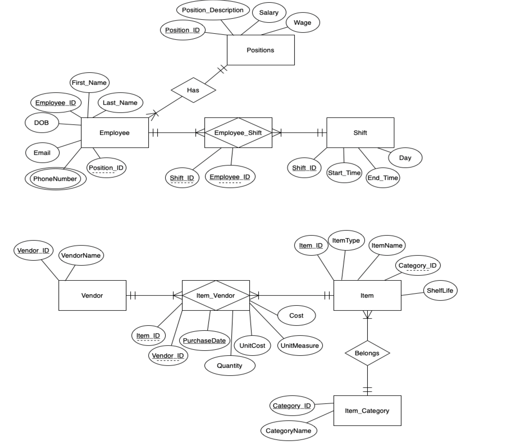RELATIONAL DATA MODEL
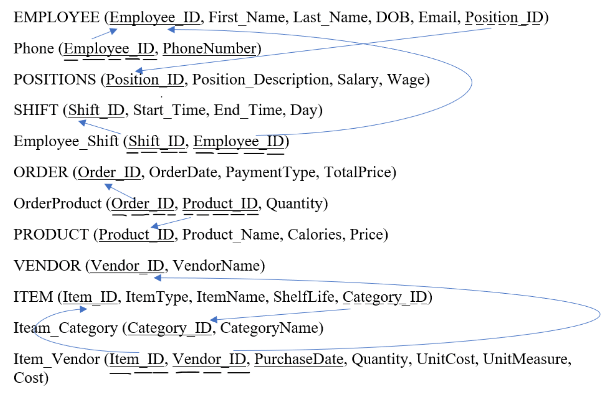NORMALISATION
We have created 8 entities, 3 associative entities and 2 relationships
It was converted to 1 NF by creating another table for Employee_ID, Phone_Number.
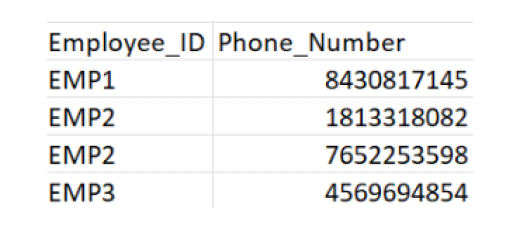
Further, it was in 2NF since there were no partial dependencies due to the presence of a single primary key.
The table was not in 3 NF due to a transitive dependency, since Employee_ID -> Position_Description -> Salary, Wage.
It was converted to 3 NF by mapping each Position_Description to a Position_ID and creating a separate table to store the corresponding Salary and Wage.
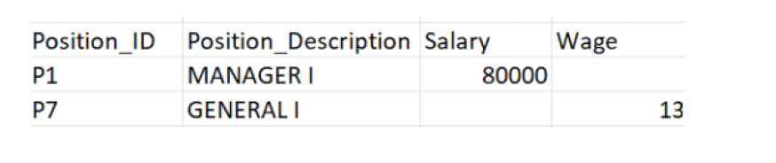
The final tables after normalisation are as below:
Employees
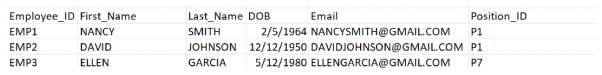Phone
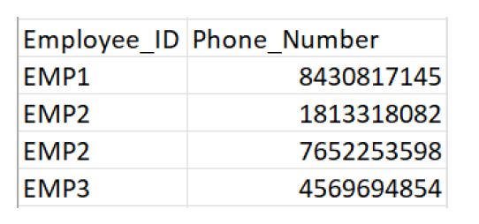Position
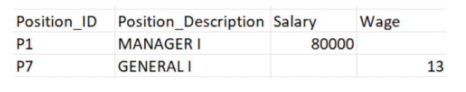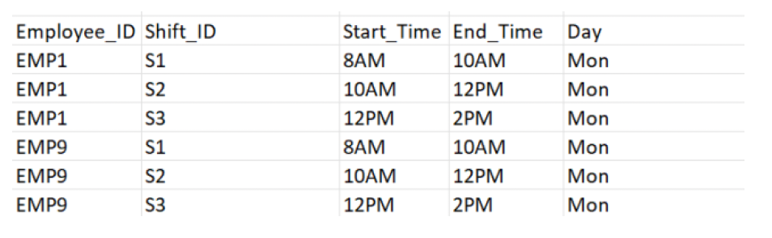
We converted it to 3NF by creating two separate tables.
The final tables after normalisation are as below:
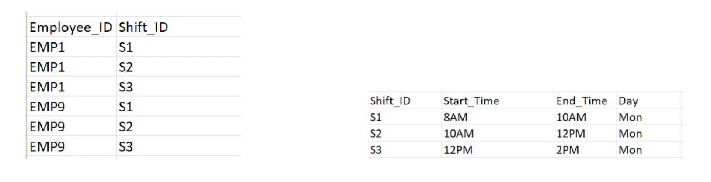
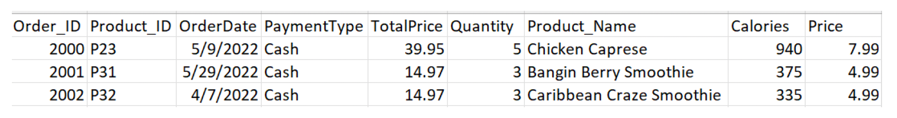
Functional dependencies:
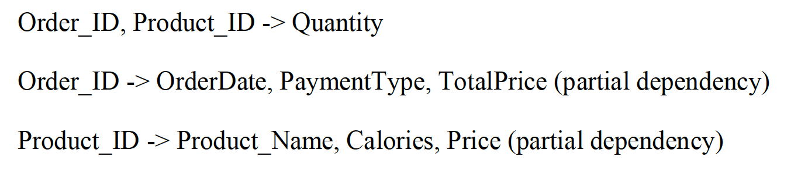
Three tables were created to convert it to 2NF. Finally, it was also in 3NF due to no transitive dependency.
The final tables after normalisation are as below:
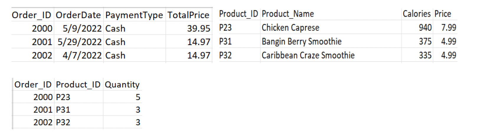
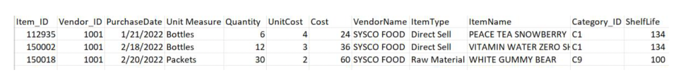
Functional dependencies:
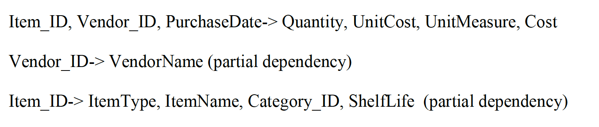
Three tables were created to convert it to 2NF. Finally, it was also in 3NF due to no transitive dependency.
The final tables after normalisation are as below:
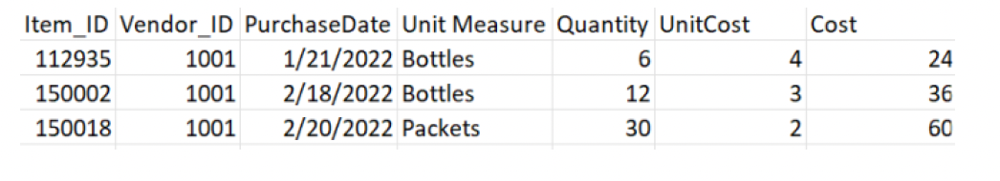
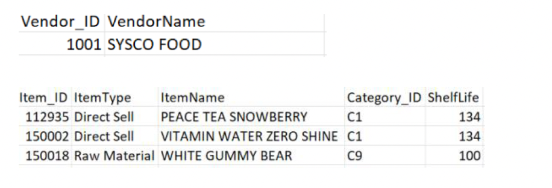
DATA WAREHOUSE
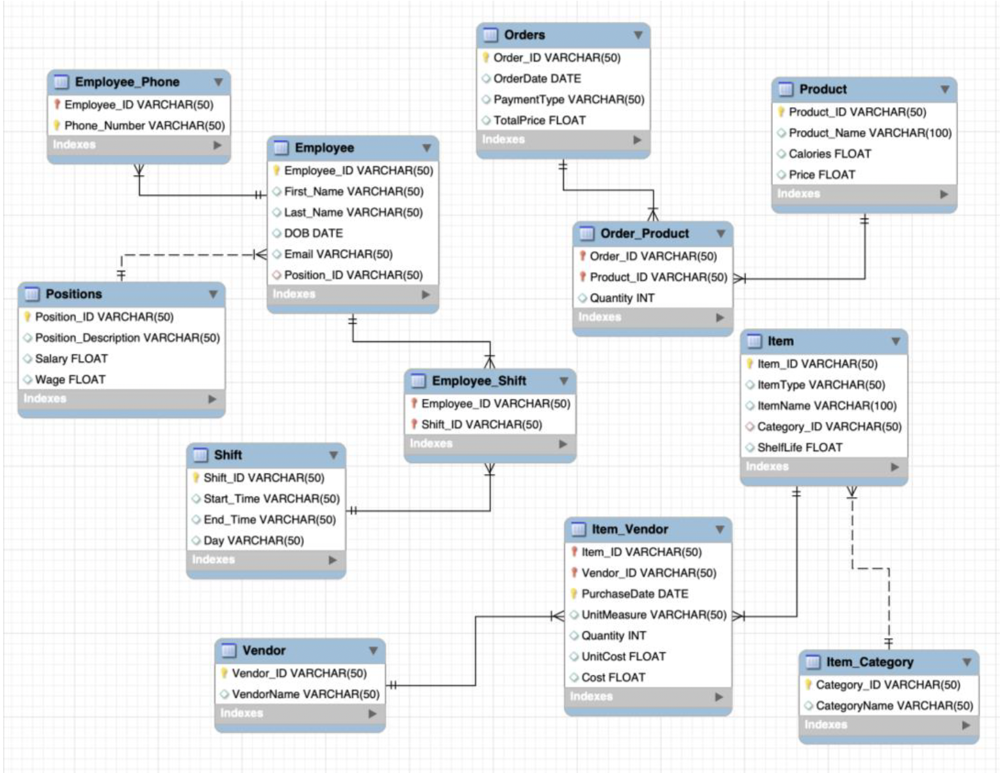DATA MODEL AND DESIGN CHOICES
Information at Freshens Food Studio is maintained in the form of spreadsheets and physical copies. To ensure a smooth flow of information and easy accessibility to answers of crucial business problems, designing a data model for Freshens is imperative. The first step towards doing so was to get in touch with the business and figure out the business rules. The relationship cardinality was decided based on these rules. For example: one vendor supplies many items, also an item can be purchased from many vendors. This led us to create an associative entity between the two due to the presence of a many-to-many relationship. Finally, we created an entity relationship diagram after doing a thorough requirement analysis for Freshens. The ER diagram consists of information that can be broadly classified into 3 parts:
All the tables were normalised and finally converted into a 3NF form before adding it to the data warehouse. For example: Since Position description had a transitive dependency on employee ID, we created a Position ID corresponding to each Position description and a different table called ‘Position’ after separating it from the employee table. Finally, the schema was created in MySQL workbench.